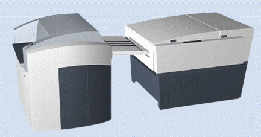

The main view displays when the user interface starts.
The devices are displayed as an animated graphic, where you can follow the sequences in the device, e.g. loading, unloading and imaging the plate. The graphic always displays the current configuration, e.g. the Suprasetter with the Auto Plate Loader and online processor:

Input boxes where you can define settings for the device are shown in this view. These boxes vary according to the function you selected in the toolbar, menu bar and tab.
The window always appears if there is a material demand (insert or remove).
This line displays the material name of the plate when a request to load or remove a plate is sent.
When a plate has been loaded and recognized, the recorder checks the plate's current width. If a plate with the wrong width is loaded, the tray or plate must be replaced with a plate of the correct width.
The printing plate is drawn into the unit when the correct width has been detected. During this process, the printing plate length is checked. The plate is ejected if a plate with the wrong length was loaded.
If the imagesetter is operated as a semi-automatic device, the plate is transported back onto the insertion table and must be replaced by a plate with the correct length.
Copyright © 2016 Heidelberger Druckmaschinen AG